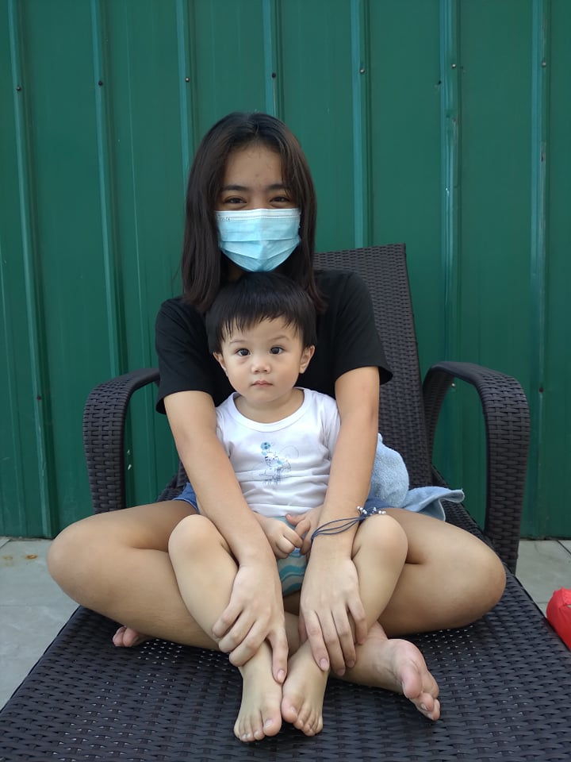
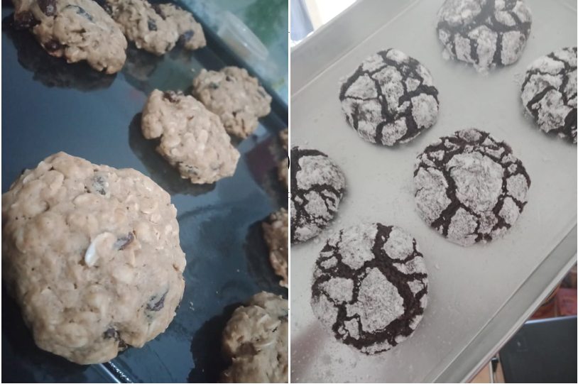
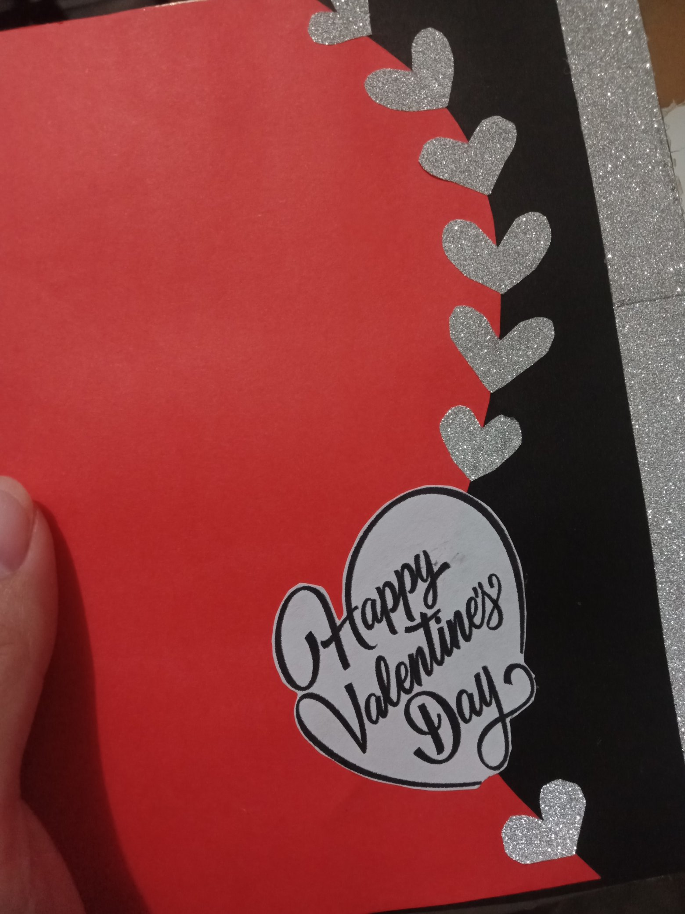

We all have different skills. Sometimes they can be innate abilities that are honed through practice or education. Other times, you've learned to cope with your surroundings, and sometimes it's because of your work that is part of your daily routine, your body has learned to deal with and master them. I recently discovered that I'm good at time-management. I'm really scared about enrolling in an online class because I wasn't sure if I could balance my time between studying and taking care of my cousins. There are many what ifs, but I realized when I started this school year that I'm good at balancing my time because I made it through the first semester with good grades. Another is my eagerness to learn new things. Whenever I learn anything new, I take the time to research it and learn more about it. Especially when I'm having fun with what I'm doing. I'm also good at teamwork and communication within a group.
I participate in a group and do my task. Whenever we have an activity, I approach them and remind them of their task and what needs to be submitted. I'm an open-minded person who's willing to listen to the ideas of others and gradually accept their arguments. I'm good at persuading people. I'll give my opinion, then tell them the possibilities of every action and convince them with my good reasoning. Reading body language, I think, is one of my abilities. I understand immediately what their intention is and what they feel through their actions. Last but not least, I really love kids. I have a long history of understanding and playing with them. Talking like a kid and making my voice soft so that they won't be scared of talking to me. All of this was discovered and perfected as a result of my own experiences. Several of my skills, I believe, will be discovered as soon as I begin to work and enter the actual world of life.
When I have leisure time, I enjoy watching action, adventure, and fantasy/sci-fi films. I also enjoy romantic or romcom dramas, but the finest one I've seen is Love O2O a CDrama, in which the leading lady is a player and a comsci student. I watched Tiktok videos, memorized the steps, and then recorded myself dancing. I enjoy dancing a lot. In my junior high years, when I was in junior high, I would always participate in dance performances whenever there was a school program. Fangirling in SB19 is one of my hobbies, which includes watching their vlogs, performances, interviews, and streaming their music videos.I even created a dummy account on Twitter to fangirl and participate in their activities and to be updated on what they're doing. SB19 is a P-pop group under the management of ShowBT Philippines, its first boy group that underwent Korean-style training, SB19 was given the name that fully represents the partnership between the Philippines and South Korea. “S” and “B” come from the company name, while “19” is actually each digit of the Philippines and South Korea's country code all added up (6+3+8+2). Reading wattpad on my phone is one of my favorite pastimes. I began reading wattpad when I was in Grade 8. I admire authors who have a broad imagination and write stories that are so realistic that you can relate to them. I used to read pocketbooks because my auntie had a collection of them, but I prefer to read in an application where there are many options.
When I go home to Batangas to relax and unwind, I usually go biking with my sister or friends. We're going to ride our bikes somewhere and then eat. It's near the beach in our province, so whenever I want to swim, I just go there. I find myself every time I'm in the sea. Soul-searching is a long and careful examination of your thoughts and feelings, especially when you are trying to make a difficult moral decision or thinking about something that has gone wrong. We really need to understand and take care of ourselves. When I return home, I look forward to spending time with my family and friends. I cherish every moment I spend with them because life is too short and no one knows what will happen on the next page of our own stories. I like singing karaoke because, even though I don't have an angelic voice, I feel like I can express all of my emotions when I sing. And I work out whenever I'm feeling down and have some free time. That way, I can clear my mind of all negative thoughts and avoid overthinking. Every one of us has our own way of passing the time in our spare time. Let's just be happy and enjoy life. YOLO.
 Interests usually more about learning and discovering ideas, concepts, and knowledge like history, animal behavior, or even pop culture. When I was a kid, I wanted to learn to play instruments like the guitar, drums, and piano. My parents couldn't afford any of those instruments at the time, so I didn't insist on getting one. But now that I have a ukelele, I'm learning how to play it. Baking is another interest of mine, and I always watch and help my auntie when she bakes. I learned how to make crinkle cookies, banana cake, and cookies. But I really want to learn more about cakes and how to design them. I also enjoy arts and crafts, such as designing scrapbooks, coloring, and reusing materials to make new crafts.
I really lend my time just to watch DIY ideas. It is advantageous if you have experience in creating various things and will learn how to use strategies. I'm a sentimental person because I keep a gift from special people. Even the wrapper of the candies I keep it, that's how much I appreciate them and their effort, as far as I remember I have boxes of it where I'm putting all the gift that I received, I really treasure those things I even cried because my brother accidentally fell and broke a gift that was given to me by my sister Maria when I was in Grade 7. I don't want to blame him because it was an accident, so all I can do is put it somewhere safe. I'm also interested in writing a story similar to what you'd find on Wattpad. I want to create a story that everyone can relate to and can imagine themselves in. I just don't know where to begin, so I read whenever I have free time. In terms of material possessions, I don't collect anything because I can't afford to buy it right now. I'm contented what I have right now . I'm the type of person who enjoys learning new things. When I'm interested in something, I go all out to pursue it, even if it takes some time .
The best way to predict your future is to create it.
Abraham Lincoln